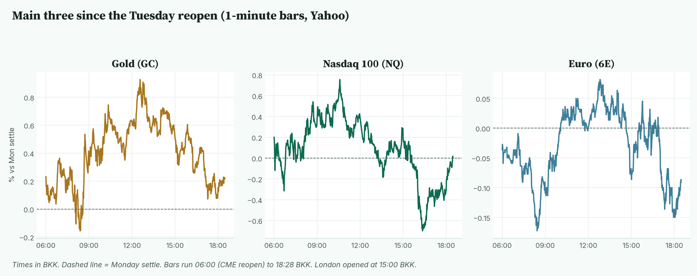
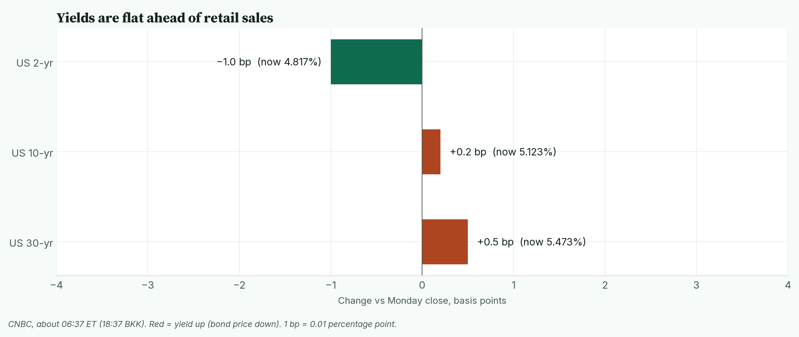
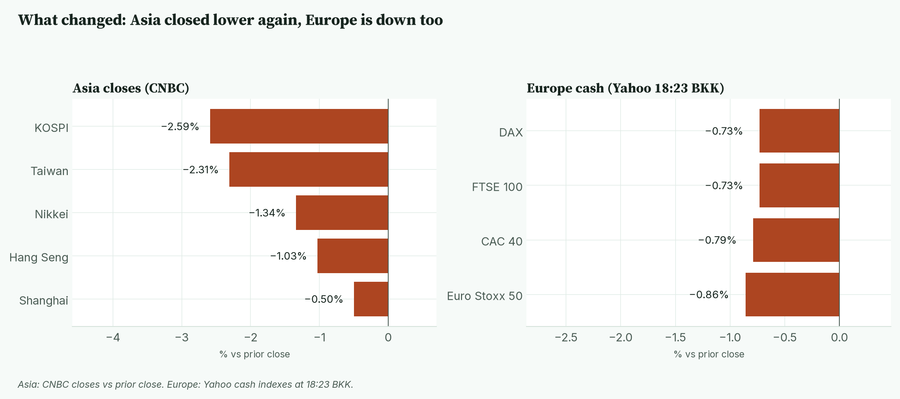
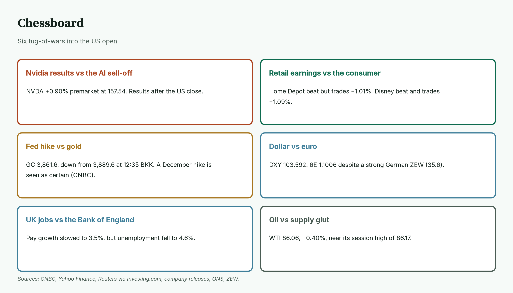
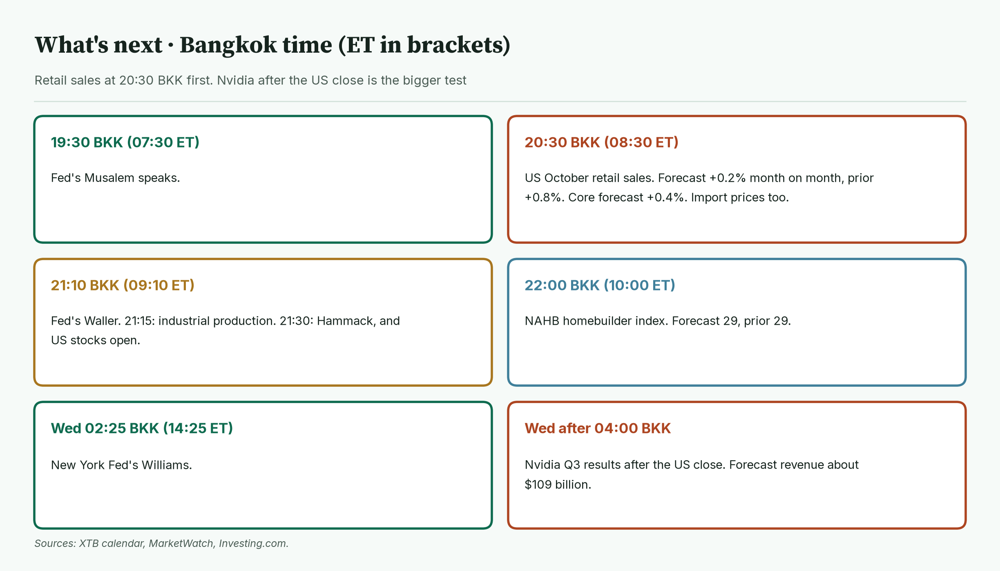
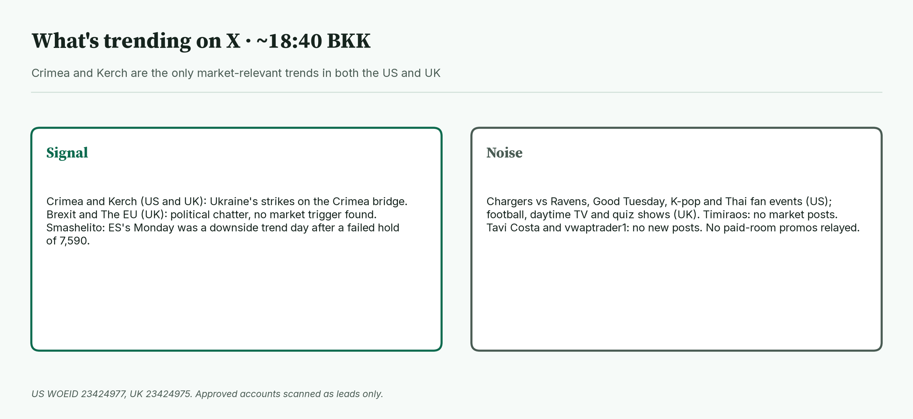

April · Market Intel, pre-NY · Tue Nov 17, 2026 · ~18:45 BKK / ~06:45 New York
Headline: Nasdaq futures are flat at 27,284.50 (+0.00%) after a dip to 27,085.00 in London. Gold futures gave back their Asia bounce to 3,861.6 (+0.22%). Euro futures slipped to 1.1006 (−0.09%). US retail sales at 20:30 BKK come first. Nvidia's results after the US close decide the week.
So what: since London, all three faded from their pre-London levels. Nasdaq broke its pre-London low, then recovered. The market is waiting, not deciding.
 Caption: Futures at 18:28 BKK versus Monday's settle. All three main contracts are near flat. The VIX is an indicative pre-open print.
Caption: Futures at 18:28 BKK versus Monday's settle. All three main contracts are near flat. The VIX is an indicative pre-open print.
1) Main instruments The three main contracts since the Tuesday reopen, as a % move from Monday's settle. Gold and the euro peaked around 12:40 BKK and faded. Nasdaq hit its low at 16:22 BKK, after London opened, and recovered. |
 Caption: The three main contracts since the Tuesday reopen, as a % move from Monday's settle. Gold and the euro peaked around 12:40 BKK and faded. Nasdaq hit its low at 16:22 BKK, after London opened, and recovered.
(Quotes are Yahoo Finance futures at 18:28 BKK (06:28 New York), matching CNBC. Session highs and lows use Yahoo 1-minute bars from the 06:00 BKK CME reopen (18:00 New York Monday). The first bar is 06:00 BKK.)
Caption: The three main contracts since the Tuesday reopen, as a % move from Monday's settle. Gold and the euro peaked around 12:40 BKK and faded. Nasdaq hit its low at 16:22 BKK, after London opened, and recovered.
(Quotes are Yahoo Finance futures at 18:28 BKK (06:28 New York), matching CNBC. Session highs and lows use Yahoo 1-minute bars from the 06:00 BKK CME reopen (18:00 New York Monday). The first bar is 06:00 BKK.)
- Gold futures (GC, Dec): 3,861.6, +0.22%, at 18:28 BKK. Driver: a December Fed hike is seen as a certainty, which caps gold (CME FedWatch via CNBC). Monday's settle was 3,853.0. Today's range is 3,845.9 (08:26 BKK) to 3,889.6 (12:35 BKK). It is down from 3,881.1 at the pre-London brief.
- Nasdaq 100 futures (NQ, Dec): 27,284.50, +0.00%, at 18:28 BKK. Driver: traders are waiting for Nvidia's results after the US close. Monday's settle was 27,284.25. Today's range is 27,085.00 (16:22 BKK) to 27,498.00 (10:36 BKK). It broke the pre-London low of 27,180.50, then bounced.
- Euro futures (6E, Dec): 1.1006, −0.09%, at 18:28 BKK. Driver: the dollar held near a 19-month high, even after a strong German survey (CNBC, ZEW). Monday's settle was 1.1016. Today's range is 1.0997 (08:26 BKK) to 1.1025 (12:45 BKK).
- Takeaway: all three gave back their Asia gains, but none has broken down.
Context. The dollar index (DXY, the dollar against six major currencies) is 103.592, +0.04% (CNBC, 18:38 BKK). The 10-year US yield (what the US government pays to borrow for 10 years) is 5.123%, up 0.2 basis points (CNBC, 18:37 BKK; a basis point is 0.01 percentage point). The VIX (the "fear gauge" built from S&P 500 option prices) is 22.65, −1.13% (CNBC, 18:38 BKK, an indicative pre-open print; Yahoo shows 23.30, so treat it as rough). US oil (CL, December) is 86.06, +0.40% (Yahoo, 18:28 BKK). S&P 500 futures (ES) are 7,425.00, −0.19% (Yahoo, 18:28 BKK). Bitcoin is $64,643, −0.50% versus CNBC's previous close (CNBC/Coin Metrics, 18:38 BKK).
2) Premarket earnings and movers
- Two retail giants beat. Prices are Yahoo premarket at 18:38 BKK.
- Home Depot beat but trades −1.01% at 344.01. Adjusted earnings per share were $3.86 against $3.84 expected. Revenue was $43.4 billion. CFO Richard McPhail becomes CEO on Nov 23 (company release, Investing.com, Yahoo Finance).
- Disney beat and trades +1.09% at 119.99. Adjusted earnings per share were $1.77 against $1.67 expected. Revenue was $25.95 billion. It raised its annual dividend to $2 (CNBC).
- Nvidia +0.90% at 157.54 before results tonight US time. Revenue forecast is about $109 billion (CNBC).
- Intel −1.25% after Nvidia cut its stake in the company by 25% (Reuters, CNBC).
- Takeaway: the consumer looks fine. The AI trade is on hold until Nvidia.
3) Rates, FX and oil Yields are flat across the curve. Bond traders are waiting for retail sales. |
 Caption: Yields are flat across the curve. Bond traders are waiting for retail sales.
Caption: Yields are flat across the curve. Bond traders are waiting for retail sales.
- CNBC, about 18:37 BKK: 2-year 4.817% (−1.0 bp), 10-year 5.123% (+0.2 bp), 30-year 5.473% (+0.5 bp).
- Fed odds. Traders see a December hike as a certainty, with about 4% odds of a half-point move, down from nearly 12% a day earlier (CME FedWatch via CNBC).
- Dollar. The dollar hit a 19-month peak on hike bets (CNBC). EUR/USD is 1.0990 (CNBC, 18:38 BKK).
- Yen. USD/JPY is 159.20 (CNBC, 18:38 BKK), still just under 160.
- Oil. WTI 86.06 and Brent (January) 92.84, +0.43% (CNBC, 18:28 BKK). Brent's range today is 91.26 to 93.03 (CNBC). Oil is bouncing after Monday's slide.
- Takeaway: rates are quiet, the dollar is firm, and oil is stabilising.
4) Why it matters Asia closed lower across the board. Europe's main indexes are down too, unlike Monday. |
 Caption: Asia closed lower across the board. Europe's main indexes are down too, unlike Monday.
Caption: Asia closed lower across the board. Europe's main indexes are down too, unlike Monday.
- Asia closed lower: KOSPI −2.59%, Taiwan −2.31%, Nikkei −1.34%, Hang Seng −1.03%, Shanghai −0.50% (CNBC).
- Europe joined in. DAX −0.73%, FTSE 100 −0.73%, Euro Stoxx 50 −0.86% (Yahoo, 18:23 BKK).
- German investor morale jumped. The ZEW expectations index rose to 35.6 from 28.1, against 28.3 expected (ZEW, Reuters). The euro still slipped.
- UK pay growth cooled. Regular pay growth slowed to 3.5% from 3.7%. Unemployment fell to 4.6% (ONS).
- Mentor: good news that cannot lift a currency tells you what really drives it. Today the euro follows US rate bets, not German sentiment.
- Takeaway: New York opens with global stocks lower and the dollar in charge.
5) Chessboard Six tug-of-wars into the US open. Retail sales and Nvidia move the main three fastest. |
 Caption: Six tug-of-wars into the US open. Retail sales and Nvidia move the main three fastest.
Caption: Six tug-of-wars into the US open. Retail sales and Nvidia move the main three fastest.
- Nvidia results vs the AI sell-off. NVDA +0.90% premarket. Results after the US close.
- Retail earnings vs the consumer. Home Depot beat but trades −1.01%. Disney beat and trades +1.09%.
- Fed hike vs gold. GC 3,861.6, down from 3,889.6 at 12:35 BKK.
- Dollar vs euro. DXY 103.592. 6E 1.1006 despite a strong ZEW.
- UK jobs vs the Bank of England. Pay growth 3.5%, unemployment 4.6%.
- Oil vs supply glut. WTI 86.06, near its session high of 86.17.
- Takeaway: the board leans toward waiting until Nvidia reports.
6) US data calendar (BKK times, ET in brackets) Retail sales at 20:30 BKK is the first test. Nvidia after the US close is the bigger one. |
 Caption: Retail sales at 20:30 BKK is the first test. Nvidia after the US close is the bigger one.
Caption: Retail sales at 20:30 BKK is the first test. Nvidia after the US close is the bigger one.
- 19:30 (7:30 AM ET): Fed's Musalem (MarketWatch).
- 20:30 (8:30 AM ET): US October retail sales. Forecast +0.2% month on month, prior +0.8%. Core forecast +0.4%. Import prices come at the same time (XTB, MarketWatch). This is the session decider.
- 21:10 (9:10 AM ET): Fed's Waller. 21:15: industrial production. 21:30: Fed's Hammack, and US stocks open (XTB, MarketWatch).
- 22:00 (10:00 AM ET): NAHB homebuilder index. Forecast 29, prior 29 (XTB).
- Wed 02:25 (2:25 PM ET): New York Fed's Williams. Nvidia reports after the US close (after 04:00 BKK Wednesday). FOMC minutes Thu 02:00 BKK (XTB, Investing.com).
- Takeaway: a strong retail print would firm up hike bets and pressure gold and the euro.
7) Scenarios and levels
- Strong retail sales. Yields and the dollar rise. Watch GC 3,845.9, NQ 27,085.00 and 6E 1.0997 for breaks lower.
- In line (the base case). Ranges likely hold until Nvidia. GC 3,845.9 to 3,889.6, NQ 27,085.00 to 27,498.00, 6E 1.0997 to 1.1025.
- Weak retail sales. Hike bets ease a little. Gold and the euro could retest 3,889.6 and 1.1025.
- These are possible paths, not forecasts.
8) Undercovered
- UK job vacancies fell to 690,000, the lowest since 2021, led by small firms citing costs (ONS, Reuters).
- Disney targets $3 billion in savings by fiscal 2029, and its CFO said "We do expect more layoffs" (CNBC).
- ZEW's president flagged debt risk. He said government-led growth "leads to rising concerns about the sustainability of public debt" (ZEW).
- Silver keeps outrunning gold. Silver futures are 47.42, +1.20% (CNBC, 18:28 BKK).
- Takeaway: hiring is cooling outside the US while companies cut costs at home.
9) What's trending on X (~18:40 BKK) Crimea and Kerch trend in both the US and UK. The rest is sport, fan events and daytime TV. |
 Caption: Crimea and Kerch trend in both the US and UK. The rest is sport, fan events and daytime TV.
Caption: Crimea and Kerch trend in both the US and UK. The rest is sport, fan events and daytime TV.
- US: Crimea, Kerch, Chargers, Good Tuesday.
- UK: Kerch Bridge, Brexit, The EU, #thismorning.
- Signal: Crimea and Kerch follow Ukraine's strikes on the Crimea bridge (The Guardian, per the pre-London brief).
- Approved accounts: Smashelito called Monday a downside trend day in ES after buyers failed to reclaim 7,590. Timiraos posted nothing market-related. Tavi Costa and vwaptrader1 had no new posts. No paid-room promos relayed.
- Noise: Chargers vs Ravens, K-pop and Thai fan events, UK football and quiz shows.
Bottom line: the market is parked until Nvidia, with retail sales as the warm-up. For Jim: Nasdaq at 27,284.50 sits mid-range, 27,085.00 to 27,498.00. Gold at 3,861.6 sits in the lower half of 3,845.9 to 3,889.6. The euro at 1.1006 sits near its 1.0997 low. Interpretive note: retail sales at 20:30 BKK sets the tone; Nvidia sets the week. 🔮 Interpretive, not data: Tuesday belongs to Mars, the planet of tests and pressure. A fitting day for retail sales and Nvidia to land back to back. Symbol, not signal.
Confidence: Futures levels: high (Yahoo, matching CNBC). Session ranges: Yahoo 1-minute bars from the 06:00 BKK reopen. Yields, DXY, yen, Bitcoin, Brent, silver and Asia: CNBC, time-stamped. VIX: CNBC and Yahoo disagree pre-open (22.65 vs 23.30); treat as indicative. Europe: Yahoo, 18:23 BKK. Premarket prices: Yahoo, 18:38 BKK. Home Depot: company release, Investing.com, Yahoo Finance. Disney and Fed odds: CNBC. Intel: Reuters, CNBC. UK jobs: ONS, Reuters. ZEW: ZEW, Reuters. Calendar: XTB, MarketWatch, Investing.com. X posts: leads only.
Charts: /workspace/april-charts/2026-11-17/pre-ny-{scoreboard,main3,rates,asia,chess,leading,xsplit}.png |